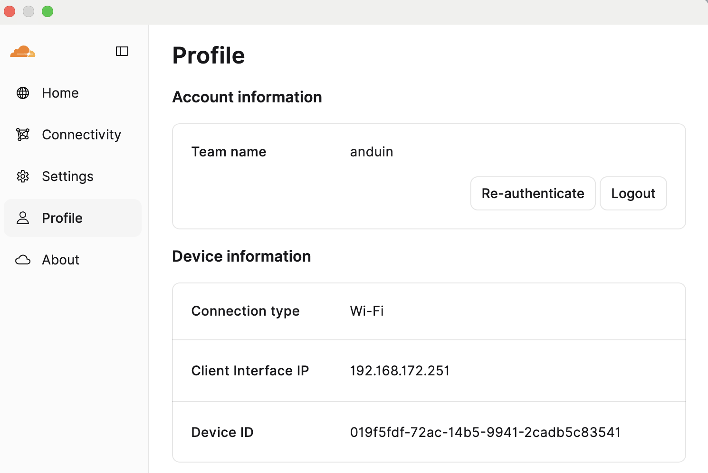
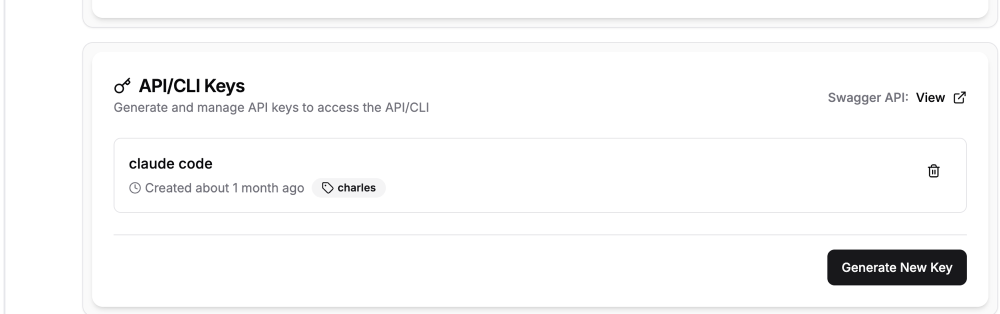
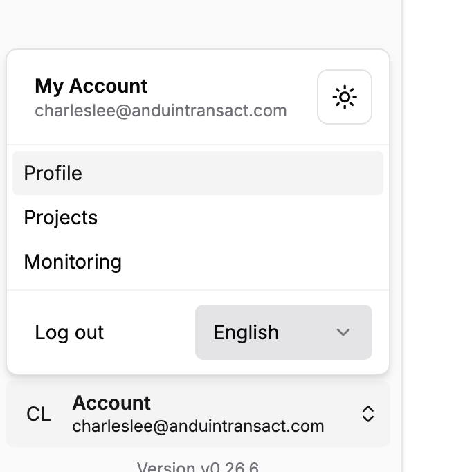
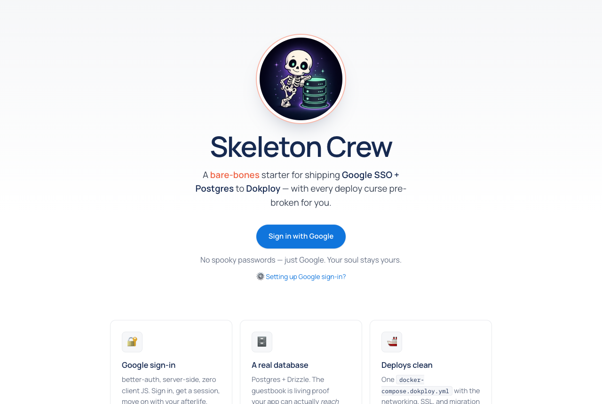

Fast Track · Deploy
Fast Track · Deploy
Deploying internal tools.
You've spent weeks telling Claude what to build. Today you'll connect your laptop to the team's own server, pick an app, make it yours — and ship it, live, before we leave.
Fast TrackToday.
What you need
Fast TrackOur box. Our data. Our rules.
Vercel is fine for prototypes. Team tools touch real company and client data — so they run on a server we own, with Dokploy, an open-source “press deploy, get a URL” platform, on top.
Own the data.
Your data stays on our server, under our rules — never on someone else's cloud.
Secure everything.
Every app sits behind the company sign-in before a single request reaches it.
Control all the things.
Server, databases, access — ours to inspect and change. No support tickets. We go look.
Fast TrackThe journey of a click.
🎛 Dokploy — the control plane
Not part of this journey. If it crashed right now, every app would keep running.
Dokploy is how apps get onto the server: it fetches your code, builds it, and starts it. You'll drive it through Claude — that's Lab 1.
 Fast Track
Fast TrackThe wall.
Every request to our apps is checked at the front gate — no company sign-in, no entry. Everything you ship today is automatically company-only. But the gate cuts two ways:
Sail through.
You sign in once in your browser; after that the gate is invisible. Your apps are private to the company without writing a line of security code.
Hit the wall.
Scripts, robots, other services — Slack included — can't sign in with Google. They get bounced, silently.
Fast TrackCheck your badge.
- Find the ☁️ in your menu bar — WARP is already on team laptops.
- Open it → Profile → team name says
anduin→ toggle Connected. - Not signed in? Preferences → Account → Login with Cloudflare Zero Trust → team
anduin→ your work Google.
While WARP is on, everything on your laptop carries your company badge — Claude included. If Dokploy ever shows a sign-in page instead of answers, check this toggle first.

The toggle says Connected, the team says anduin. That's your badge on — everything on this laptop, Claude included, now passes the gate.
Fast TrackGet your key.
- Open taincap.anduin.center — it just loads. (That's WARP.) Sign in with the Dokploy login we give you.
- Bottom-left Account → Profile ① ②
- API/CLI Keys → Generate New Key ③ → copy it. Treat it like a password — the next step is the only place it goes.


Fast TrackHand Claude the keys.
- Run
claude mcp add(→) with your key pasted in where marked. That's the whole setup. - Restart Claude Code → approve the new server. (The first start takes a quiet minute — normal, not broken.)
Miss a step? All of Lab 1 is a self-paced page: Resources → Dokploy Setup Guide on the course home.
Ask Claude: “list my Dokploy projects”. Any real answer is a pass — even an empty list. A sign-in page instead? Check WARP.
Fast TrackInstall the playbooks.
npx skills is a package manager for agent skills (skills.sh) — npm install, but for the markdown playbooks Claude loads on demand.
- One command (→) installs the team's two playbooks. They stay linked to GitHub —
npx skills updatealways gets you the latest. - dokploy-starter — sets up a new app the right way. Lab 2.
- dokploy-deploy — ships it and proves it works. Every hard-won lesson baked in. Lab 3.
Restart Claude Code, then ask: “which dokploy skills do you have?” → it names both. Setup done.
Fast TrackThe starters.
💀Skeleton — the guestbook
“People sign in, data gets saved.” Google sign-in + a database — the bones of almost every internal tool, already working.

Cauldron
“Work happens in the background.” Slow jobs run off to the side — reports, imports, checking other tools for news.
cauldron-cl.anduincapital.devSéance
“Screens update live.” Chat, presence, dashboards that tick — everyone sees changes instantly.
seance-cl.anduincapital.devFast TrackPick your app.
Either way: make it yours, then ship your own copy at its own address.
The guestbook
The foundation: Google sign-in + a database. And sign-in just works — the team's shared sign-in service handles it. Zero setup.
AI-Hivemind-Lab/dokploy-skeletonThe séance
The crowd-pleaser: a live chat room with no sign-in setup at all — and the best demo in the room: open it on every laptop at once.
AI-Hivemind-Lab/seanceFast TrackCustomize, small and visible.
- Start fresh — tell Claude:
use the dokploy-starter skill to set up <your pick>. - Make it yours — a new name, your look, one visible change. Small and finished beats big and broken — you demo in 40 minutes.
- Put it on GitHub:
gh repo create <starter>-<you> --public --source=. --push— the server pulls your code from there.
Your repo is on GitHub — that's the only gate. The server builds from GitHub, so running it locally is a bonus, not a requirement.
Fast TrackDeploy it — by saying so.
- Tell Claude: “deploy this to dokploy” — the dokploy-deploy skill takes it from there.
- Claude will stop and ask where your database should live. Say: “create a new managed Postgres in my project.” That database is yours for good — every app you ship after today shares it.
- Then Claude builds your app, wires up its address, and checks it's healthy — you just watch.
Deployment done, and Claude says the health check passed. Stuck more than 2 minutes? Wave — we'll hand you a spare and fix yours after.
Show your shape.
On the big screen: 💀 sign each other's guestbooks. 🔮 one chat room, every laptop — messages crossing the room live.
Then visit each other's apps — anyone at the company can. All live, all shipped by telling Claude to.
Fast TrackNow do it with your app.
dokploy-starter in absorb mode: it fits the starter patterns into your code.deploy this to dokploy. This time answer the database question with “reuse my Postgres” — the one you made today.